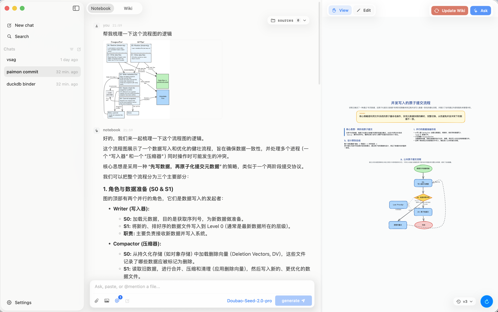

Chat with a model about a repo, a paper, a stack trace. echo turns the conversation into a hand-drawn canvas you can edit, a markdown wiki you can search, and a memory you can come back to.
echo is a chat-first notebook with a hand-drawn canvas on the side. You think out loud, paste evidence, and watch your understanding crystallize.
Tell the model what you're learning. It renders a hand-drawn diagram — boxes, arrows, code snippets, sticky notes — that you can grab and edit by hand.
Paste screenshots, code, papers, repo paths. echo holds them as persistent context — you describe what you see once, then keep riffing.
Save a session and it shows up in your wiki — auto-summary, backlinks, ask across the whole graph.
Attach a PDF, a repo, a URL. echo carries them through every turn so the model stays grounded.
Plug in any provider — OpenAI, Anthropic, Doubao, a local llama.cpp. Your notes live as markdown in a folder you control. Open them in Obsidian tomorrow if you want.
Sessions are markdown + a tiny canvas JSON. Open them in any editor.
echo is for the part of learning that happens between reading and understanding — when you're trying to fit something new into your head.
Paste a screenshot, a paper, a stack trace, a repo path. echo holds it for the whole session — you describe what you see, not what you already explained two messages ago.
Register any MCP server — repo readers, paper fetchers, stack tracers, your own. echo calls them mid-conversation, streams the results back into context, and keeps reasoning.
When the idea clicks, save the session. echo writes a markdown page, summarizes it, and links it to related notes. Search across the whole graph — or just ask it later.
Configure your model providers, plug in MCP tools, and pick the models you want echo to use for sources and wiki generation. Everything lives in one settings panel.
Add at least one provider — OpenAI, Anthropic, Doubao, DeepSeek, or any OpenAI-compatible endpoint. Paste your API key, pick a base URL, and echo verifies the connection in place.
Register any MCP server — repo readers, paper fetchers, your own custom tools. echo loads them on launch and the model can call them mid-conversation.
Pick the VLM that reads screenshots and diagrams, and the embedding model that indexes everything you attach so echo can search it later.
Choose the LLM that writes wiki summaries and answers questions, and the embedding model that powers backlinks and graph-wide search.
Same chrome, same canvas, same wiki. Click around — when you're ready, download it and start with your own notes.
